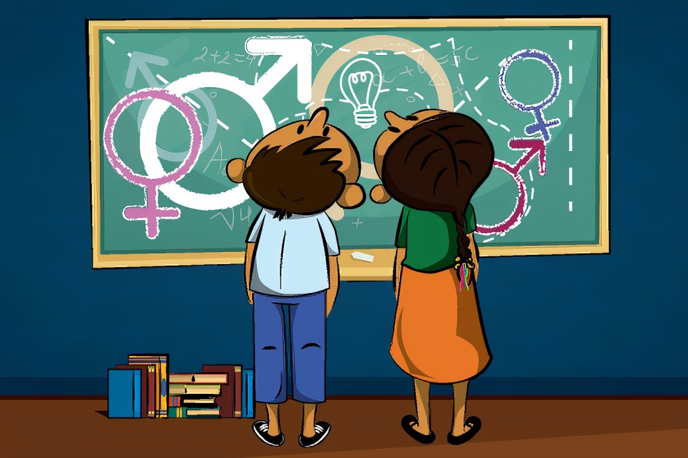

Educación Sexual
La educación sexual es un proceso formativo que brinda información veraz, científica y apropiada sobre la sexualidad humana. Abarca aspectos físicos, emocionales, sociales y éticos del desarrollo sexual, con el objetivo de formar personas informadas, responsables y respetuosas de sí mismas y de los demás.
¿Por qué es importante?
- Previene embarazos no planificados y enfermedades de transmisión sexual (ETS).
- Promueve relaciones afectivas sanas, basadas en el respeto y el consentimiento.
- Contribuye a la autoestima, el autocuidado y la toma de decisiones informadas.
- Ayuda a identificar y prevenir situaciones de abuso o violencia sexual.
- Combate mitos, prejuicios y desinformación sobre el cuerpo y la sexualidad.
¿Qué incluye la educación sexual integral?
- Conocimiento del cuerpo humano y sus funciones reproductivas.
- Identidad y expresión de género, orientación sexual y diversidad.
- Información sobre métodos anticonceptivos y prevención de ETS.
- Derechos sexuales y reproductivos.
- Relaciones afectivas y toma de decisiones responsables.
- Prevención del acoso, abuso y violencia de género.
¿Desde cuándo debe comenzar?
La educación sexual debe empezar desde la infancia, adaptada a cada etapa del desarrollo. No se trata solo de hablar de sexo, sino de aprender a conocerse, cuidarse y respetar a los demás. Mientras más temprana y adecuada sea la formación, mejores herramientas tendrán niños, niñas y adolescentes para enfrentar su crecimiento de forma segura y saludable.
¿Quiénes deben participar?
- La familia: Juega un papel clave al ofrecer un ambiente de confianza y diálogo.
- La escuela: Debe impartir contenidos científicos, libres de estigmas y adaptados a la edad del alumnado.
- Los profesionales de la salud: Aportan orientación técnica y acompañamiento.
- La sociedad: Debe promover políticas públicas y recursos que favorezcan la educación sexual integral.